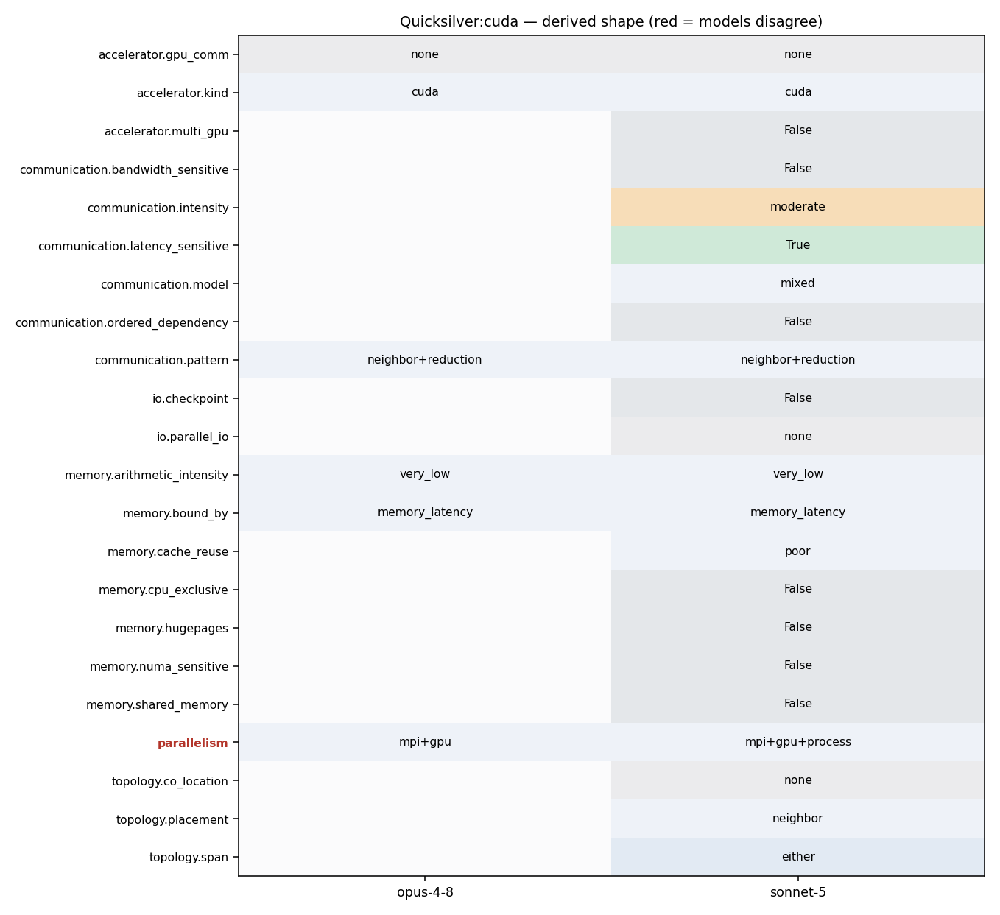

srun -n <ranks> qs -i input.inp ... (one GPU per rank, HAVE_CUDA + HAVE_UVM, CycleTrackingKernel launched per particle-vault)
nvcc-built qs launched like: srun -n<ranks> ./qs -i <input>.inp --nParticles=<N> (one MPI rank typically mapped to one GPU by job launcher; not explicit in source)
39 # collectives. (Quicksilver will use MPI_Iallreduce 40 # in the test-for-done algorithm.) 41 # 42 # -DHAVE_CUDA Define this to enable the Cuda build. 43 # 44 # -DHAVE_HIP Define this to enable the HIP build. Quicksilver assumes 45 # that HIP is targeting AMD GPUs.
123 124 #if defined GPU_NATIVE 125 126 GLOBAL void CycleTrackingKernel( MonteCarlo* monteCarlo, int num_particles, ParticleVault* processingVault, ParticleVault* processedVault ) 127 { 128 int global_index = getGlobalThreadID(); 129 130 if( global_index < num_particles ) 131 { 132 CycleTrackingGuts( monteCarlo, global_index, processingVault, processedVault ); 133 } 134 } 135 136 #endif 137 138 void cycleTracking(MonteCarlo *monteCarlo) 139 { 140 MC_FASTTIMER_START(MC_Fast_Timer::cycleTracking); 141 142 bool done = false; 143 144 //Determine whether or not to use GPUs if they are available (set for each MPI rank) 145 ExecutionPolicy execPolicy = getExecutionPolicy( monteCarlo->processor_info->use_gpu ); 146
205 #CUDA_FLAGS = -I${CUDA_PATH}/include/ 206 #CUDA_LDFLAGS = -L${CUDA_PATH}/lib64/ -lcuda -lcudart 207 # 208 #CXX=$(CUDA_PATH)/bin/nvcc 209 #CXXFLAGS = -DHAVE_CUDA -std=c++11 $(OPTFLAGS) -Xptxas -v 210 #CXXFLAGS += -gencode=arch=compute_60,code=\"sm_60,compute_60\" 211 #CXXFLAGS += --compiler-bindir=$(HOST_COMPILER)
5 6 namespace 7 { 8 #if defined GPU_NATIVE 9 __global__ void trivialKernel() 10 { 11 int global_index = getGlobalThreadID(); 12 if( global_index == 0) 13 { 14 } 15 } 16 #endif 17 } 18 19 #if defined GPU_NATIVE
10 #define DEVICE_END 11 //#define HOST __host__ 12 #define HOST_END 13 #define GLOBAL __global__ 14 #elif HAVE_OPENMP_TARGET 15 #define HOST_DEVICE _Pragma( "omp declare target" ) 16 #define HOST_DEVICE_CUDA
19 MpiCommObject::MpiCommObject(const MPI_Comm& comm, const DecompositionObject& ddc) 20 :_comm(comm), 21 _ddc(ddc) 22 { 23 } 24 25 void MpiCommObject::exchange(MeshPartition::MapType& cellInfoMap, 26 const vector<int>& nbrDomain, 27 vector<set<Long64> > sendSet, 28 vector<set<Long64> > recvSet) 29 30 { 31 int nRanks, myRank; 32 mpiComm_rank(MPI_COMM_WORLD, &myRank); 33 mpiComm_size(MPI_COMM_WORLD, &nRanks); 34 mpiBarrier(MPI_COMM_WORLD); 35 36 qs_assert(sendSet.size() == nbrDomain.size()); 37 qs_assert(recvSet.size() == nbrDomain.size()); 38 39 const int xTag = 13; 40 int nRequest = 2*nbrDomain.size(); 41 int nItemsToSend = 0; 42 int nItemsToRecv = 0;
16 // 17 // Type Definitions 18 // 19 struct MC_MPI_Send_Mode 20 { 21 public: 22 enum Enum 23 { 24 Send, 25 Ssend, 26 Bsend, 27 Rsend, 28 Isend, 29 Issend, 30 Ibsend, 31 Irsend 32 }; 33 }; 34 35 struct particle_buffer_base_type
209 #CXXFLAGS = -DHAVE_CUDA -std=c++11 $(OPTFLAGS) -Xptxas -v 210 #CXXFLAGS += -gencode=arch=compute_60,code=\"sm_60,compute_60\" 211 #CXXFLAGS += --compiler-bindir=$(HOST_COMPILER) 212 #CPPFLAGS = -x cu -dc -DHAVE_MPI -DHAVE_ASYNC_MPI 213 #LDFLAGS = $(CUDA_LDFLAGS) 214 ##LDFLAGS += ${CUDA_PATH}/lib64/libnvToolsExt.so 215
54 // post recvs 55 { 56 CellInfo* recvPtr = recvBuf; 57 for (unsigned ii=0; ii<nbrDomain.size(); ++ii) 58 { 59 const int sourceRank = _ddc.getRank(nbrDomain[ii]); 60 const int nRecv = recvSet[ii].size(); 61 mpiIrecv(recvPtr, nRecv, datatype, sourceRank, xTag, _comm, request+2*ii); 62 recvPtr += nRecv; 63 } 64 } 65 66 // assemble buffers and send 67 { 68 int count = 0; 69 CellInfo* sendPtr = sendBuf; 70 for (unsigned ii=0; ii<nbrDomain.size(); ++ii) 71 { 72 for (auto iter=sendSet[ii].begin(); iter!=sendSet[ii].end(); ++iter) 73 sendBuf[count++] = cellInfoMap[*iter]; 74 const int targetRank = _ddc.getRank(nbrDomain[ii]); 75 const int nSend = sendSet[ii].size(); 76 mpiIsend(sendPtr, nSend, datatype, targetRank, xTag, _comm, request+(2*ii)+1); 77 sendPtr += nSend;
77 { qs_assert(MPI_Waitall(count, array_of_requests, array_of_statuses) == MPI_SUCCESS); } 78 void mpiAllreduce ( void *sendbuf, void *recvbuf, int count, MPI_Datatype datatype, MPI_Op operation, MPI_Comm comm ) 79 { qs_assert(MPI_Allreduce(sendbuf, recvbuf, count, datatype, operation, comm) == MPI_SUCCESS); } 80 void mpiIAllreduce( void *sendbuf, void *recvbuf, int count, MPI_Datatype datatype, MPI_Op operation, MPI_Comm comm, MPI_Request *request) 81 #ifdef HAVE_ASYNC_MPI 82 { qs_assert(MPI_Iallreduce(sendbuf, recvbuf, count, datatype, operation, comm, request) == MPI_SUCCESS); } 83 #else 84 { qs_assert(MPI_Allreduce(sendbuf, recvbuf, count, datatype, operation, comm ) == MPI_SUCCESS); } 85 #endif 86 void mpiReduce( void *sendbuf, void *recvbuf, int count, MPI_Datatype datatype, MPI_Op op, int root, MPI_Comm comm ) 87 { qs_assert(MPI_Reduce(sendbuf, recvbuf, count, datatype, op, root, comm) == MPI_SUCCESS); }
55 { 56 CellInfo* recvPtr = recvBuf; 57 for (unsigned ii=0; ii<nbrDomain.size(); ++ii) 58 { 59 const int sourceRank = _ddc.getRank(nbrDomain[ii]); 60 const int nRecv = recvSet[ii].size(); 61 mpiIrecv(recvPtr, nRecv, datatype, sourceRank, xTag, _comm, request+2*ii); 62 recvPtr += nRecv; 63 } 64 } 65 66 // assemble buffers and send 67 { 68 int count = 0; 69 CellInfo* sendPtr = sendBuf; 70 for (unsigned ii=0; ii<nbrDomain.size(); ++ii) 71 { 72 for (auto iter=sendSet[ii].begin(); iter!=sendSet[ii].end(); ++iter) 73 sendBuf[count++] = cellInfoMap[*iter]; 74 const int targetRank = _ddc.getRank(nbrDomain[ii]); 75 const int nSend = sendSet[ii].size(); 76 mpiIsend(sendPtr, nSend, datatype, targetRank, xTag, _comm, request+(2*ii)+1); 77 sendPtr += nSend; 78 }
43 tal.push_back(_balanceTask[0]._numSegments); 44 vector<uint64_t> sum(tal.size()); 45 46 mpiAllreduce(&tal[0], &sum[0], tal.size(), MPI_UINT64_T, MPI_SUM, monteCarlo->processor_info->comm_mc_world); 47 48 int index = 0; 49 _balanceTask[0]._absorb = sum[index++];
12 OpenMP and MPI are used for parallelization. A GPU version is 13 available. Unified memory is assumed. 14 15 Performance of Quicksilver is likely to be dominated by latency bound 16 table look-ups, a highly branchy/divergent code path, and poor 17 vectorization potential. 18 19 For more information, visit the 20 [LLNL co-design pages.](https://codesign.llnl.gov/quicksilver.php)
10 memory access patterns, communication patterns, and the branching or 11 divergence of Mercury for problems using multigroup cross sections. 12 OpenMP and MPI are used for parallelization. A GPU version is 13 available. Unified memory is assumed. 14 15 Performance of Quicksilver is likely to be dominated by latency bound 16 table look-ups, a highly branchy/divergent code path, and poor
53 MonteCarlo* initMC(const Parameters& params) 54 { 55 MonteCarlo* monteCarlo; 56 #ifdef HAVE_UVM 57 void* ptr; 58 gpuMallocManaged( &ptr, sizeof(MonteCarlo) ); 59 monteCarlo = new(ptr) MonteCarlo(params); 60 #else 61 monteCarlo = new MonteCarlo(params);
25 _nuclearData = 0; 26 _materialDatabase = 0; 27 28 #if defined (HAVE_UVM) 29 void *ptr1, *ptr2, *ptr3, *ptr4; 30 31 gpuMallocManaged( &ptr1, sizeof(Tallies) ); 32 gpuMallocManaged( &ptr2, sizeof(MC_Processor_Info) ); 33 gpuMallocManaged( &ptr3, sizeof(MC_Time_Info) ); 34 gpuMallocManaged( &ptr4, sizeof(MC_Fast_Timer_Container) ); 35 36 _tallies = new(ptr1) Tallies( params.simulationParams.balanceTallyReplications, 37 params.simulationParams.fluxTallyReplications,
53 MonteCarlo* initMC(const Parameters& params) 54 { 55 MonteCarlo* monteCarlo; 56 #ifdef HAVE_UVM 57 void* ptr; 58 gpuMallocManaged( &ptr, sizeof(MonteCarlo) ); 59 monteCarlo = new(ptr) MonteCarlo(params); 60 #else 61 monteCarlo = new MonteCarlo(params); 62 #endif 63 initGPUInfo(monteCarlo); 64 initTimeInfo(monteCarlo, params); 65 initNuclearData(monteCarlo, params); 66 initMesh(monteCarlo, params); 67 initTallies(monteCarlo, params); 68 69 MC_Base_Particle::Update_Counts(); 70 71 // used when debugging cross sections 72 checkCrossSections(monteCarlo, params); 73 return monteCarlo; 74 } 75 76 namespace
25 _nuclearData = 0; 26 _materialDatabase = 0; 27 28 #if defined (HAVE_UVM) 29 void *ptr1, *ptr2, *ptr3, *ptr4; 30 31 gpuMallocManaged( &ptr1, sizeof(Tallies) ); 32 gpuMallocManaged( &ptr2, sizeof(MC_Processor_Info) ); 33 gpuMallocManaged( &ptr3, sizeof(MC_Time_Info) ); 34 gpuMallocManaged( &ptr4, sizeof(MC_Fast_Timer_Container) ); 35 36 _tallies = new(ptr1) Tallies( params.simulationParams.balanceTallyReplications, 37 params.simulationParams.fluxTallyReplications, 38 params.simulationParams.cellTallyReplications, 39 params.simulationParams.energySpectrum, 40 params.simulationParams.nGroups); 41 processor_info = new(ptr2) MC_Processor_Info(); 42 time_info = new(ptr3) MC_Time_Info(); 43 fast_timer = new(ptr4) MC_Fast_Timer_Container(); 44 #else 45 _tallies = new Tallies( params.simulationParams.balanceTallyReplications, 46 params.simulationParams.fluxTallyReplications, 47 params.simulationParams.cellTallyReplications, 48 params.simulationParams.energySpectrum,
9 particle transport problem. Quicksilver attempts to replicate the 10 memory access patterns, communication patterns, and the branching or 11 divergence of Mercury for problems using multigroup cross sections. 12 OpenMP and MPI are used for parallelization. A GPU version is 13 available. Unified memory is assumed. 14 15 Performance of Quicksilver is likely to be dominated by latency bound 16 table look-ups, a highly branchy/divergent code path, and poor
12 OpenMP and MPI are used for parallelization. A GPU version is 13 available. Unified memory is assumed. 14 15 Performance of Quicksilver is likely to be dominated by latency bound 16 table look-ups, a highly branchy/divergent code path, and poor 17 vectorization potential. 18 19 For more information, visit the 20 [LLNL co-design pages.](https://codesign.llnl.gov/quicksilver.php)
123 124 #if defined GPU_NATIVE 125 126 GLOBAL void CycleTrackingKernel( MonteCarlo* monteCarlo, int num_particles, ParticleVault* processingVault, ParticleVault* processedVault ) 127 { 128 int global_index = getGlobalThreadID(); 129
190 191 //Call Cycle Tracking Kernel 192 if( runKernel ) 193 CycleTrackingKernel<<<grid, block >>>( monteCarlo, numParticles, processingVault, processedVault ); 194 195 //Synchronize the stream so that memory is copied back before we begin MPI section 196 gpuPeekAtLastError();
1 #ifndef DECLAREMACRO_HH 2 #define DECLAREMACRO_HH 3 4 #if defined HAVE_CUDA || defined HAVE_HIP 5 #define HOST_DEVICE __host__ __device__ 6 #define HOST_DEVICE_CUDA __host__ __device__ 7 #define HOST_DEVICE_CLASS 8 #define HOST_DEVICE_END 9 #define DEVICE __device__ 10 #define DEVICE_END 11 //#define HOST __host__ 12 #define HOST_END 13 #define GLOBAL __global__ 14 #elif HAVE_OPENMP_TARGET 15 #define HOST_DEVICE _Pragma( "omp declare target" ) 16 #define HOST_DEVICE_CUDA
189 #LDFLAGS = $(CUDA_LDFLAGS) 190 191 192 ############################################################################### 193 # Cuda on LLNL CORAL EA nodes 194 ############################################################################### 195 ## Choose one Cuda path 196 ##CUDA_PATH = /usr/local/cuda-8.0 197 #CUDA_PATH = /usr/tcetmp/packages/cuda-9.0.176 198 199 #HOST_COMPILER = /usr/tce/packages/spectrum-mpi/spectrum-mpi-2017.04.03-xl-beta-2017.09.13/bin/mpixlC 200 201 #OPTFLAGS = -O2 202 ## Version below for debugging 203 ##OPTFLAGS = -DUSE_NVTX -g -G -lineinfo -O0 204 205 #CUDA_FLAGS = -I${CUDA_PATH}/include/ 206 #CUDA_LDFLAGS = -L${CUDA_PATH}/lib64/ -lcuda -lcudart 207 # 208 #CXX=$(CUDA_PATH)/bin/nvcc 209 #CXXFLAGS = -DHAVE_CUDA -std=c++11 $(OPTFLAGS) -Xptxas -v 210 #CXXFLAGS += -gencode=arch=compute_60,code=\"sm_60,compute_60\" 211 #CXXFLAGS += --compiler-bindir=$(HOST_COMPILER) 212 #CPPFLAGS = -x cu -dc -DHAVE_MPI -DHAVE_ASYNC_MPI
55 { 56 CellInfo* recvPtr = recvBuf; 57 for (unsigned ii=0; ii<nbrDomain.size(); ++ii) 58 { 59 const int sourceRank = _ddc.getRank(nbrDomain[ii]); 60 const int nRecv = recvSet[ii].size(); 61 mpiIrecv(recvPtr, nRecv, datatype, sourceRank, xTag, _comm, request+2*ii); 62 recvPtr += nRecv; 63 } 64 } 65 66 // assemble buffers and send 67 { 68 int count = 0; 69 CellInfo* sendPtr = sendBuf; 70 for (unsigned ii=0; ii<nbrDomain.size(); ++ii) 71 { 72 for (auto iter=sendSet[ii].begin(); iter!=sendSet[ii].end(); ++iter) 73 sendBuf[count++] = cellInfoMap[*iter]; 74 const int targetRank = _ddc.getRank(nbrDomain[ii]); 75 const int nSend = sendSet[ii].size(); 76 mpiIsend(sendPtr, nSend, datatype, targetRank, xTag, _comm, request+(2*ii)+1); 77 sendPtr += nSend; 78 }
44 does not support this, it may be disabled by setting the mpiThreadMultiple 45 option within the deck to 0.[ mpiThreadMultiple has ben disable in QS ] 46 47 Also, that particular test problem requires the user to specify the 48 number of I, J, and K ranks such that their product equals the number 49 of MPI processes requested: Thus a 4 mpi process run of this input deck 50 would look like: 51 52 srun -n4 ./qs -i Input/homogeneousProblem_v3.inp -I 2 -J 2 -K 1 53 54 And an 8 MPI process run could look like: 55 56 srun -n8 ./qs -i Input/homogeneousProblem_v3.inp -I 2 -J 2 -K 2 57 58 59 -------------------------------------------------------------------------------